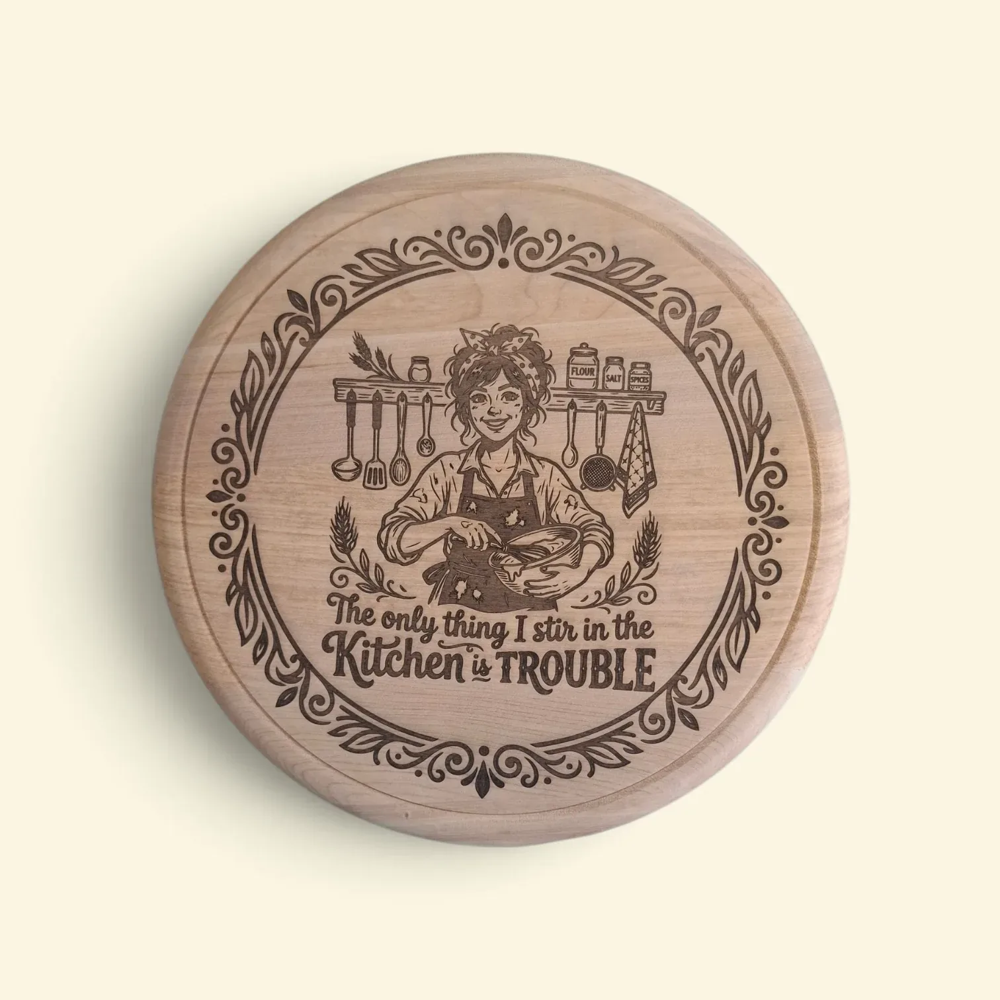
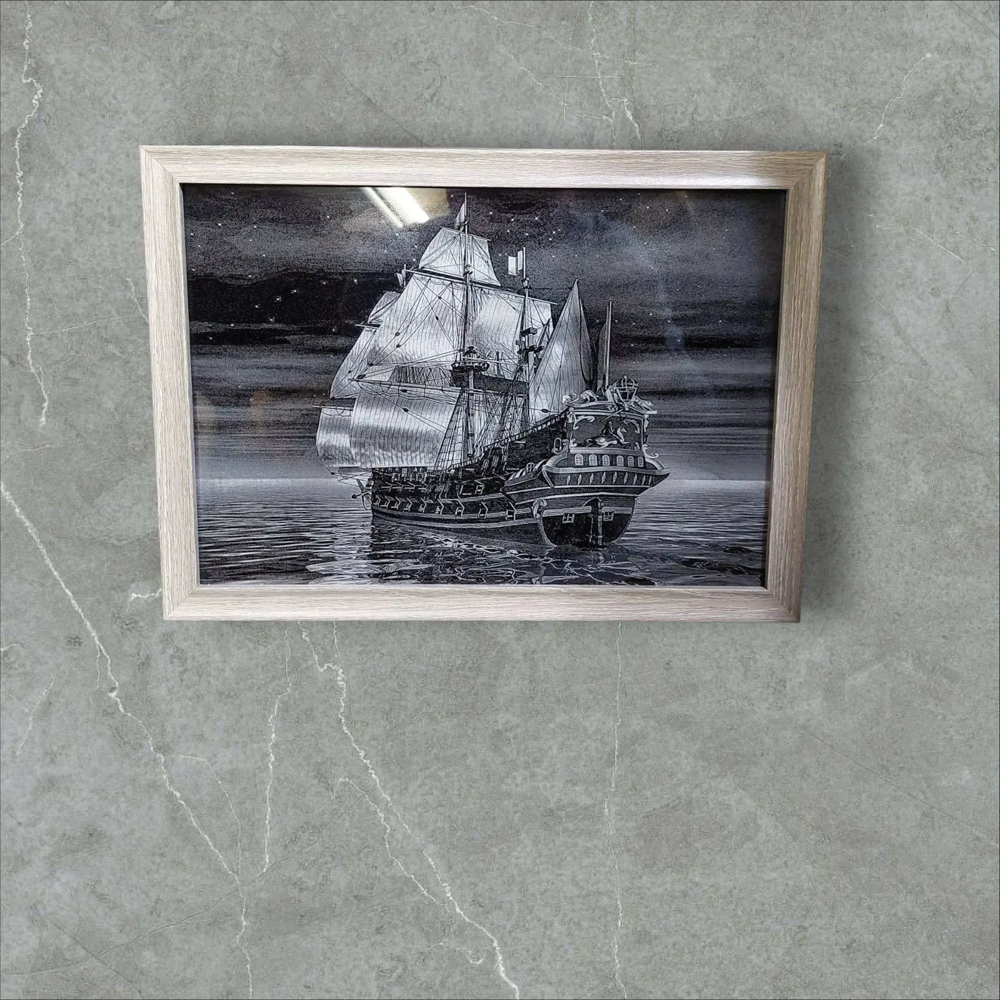

Što se sve može laserski gravirati? Ideje, materijali i mogućnosti
Objavljeno: 2. kolovoza 2026.
Lasersko graviranje posljednjih je godina postalo jedan od najpopularnijih načina personalizacije poklona, poslovnih proizvoda i dekoracija. Zahvaljujući velikoj preciznosti, moguće je izraditi trajne gravure na različitim materijalima — od drveta i kože, pa sve do stakla i metala.
Ako razmišljate o personaliziranom poklonu ili jedinstvenom proizvodu za svoj dom ili poslovanje, u nastavku donosimo pregled najčešćih materijala koji se mogu gravirati.
Graviranje na drvu 🪵

Drvo je jedan od najtraženijih materijala za lasersko graviranje. Prirodan izgled i mogućnost izrade detaljnih motiva čine ga idealnim izborom za:
- daske za posluživanje
- kuhinjske daske
- satove
- ukrasne ploče
- personalizirane poklone
- 3D drvene karte
Lasersko graviranje na drvu daje elegantan i dugotrajan rezultat bez oštećenja materijala. Pogledajte primjere naših graviranih satova i 3D drvenih karata u galeriji.
Graviranje na staklu 🥂

Laserski se mogu personalizirati čaše, boce, vaze i ukrasni predmeti. Takvi proizvodi često se izrađuju kao pokloni za vjenčanja, godišnjice ili poslovne partnere. Pogledajte i naše portrete izrađene na staklu.
Graviranje kože 👛
Kožni proizvodi mogu dobiti potpuno novi izgled uz personalizaciju. Najčešće graviramo:
- novčanike
- privjeske
- rokovnike
- futrole
Ime, datum ili posebna poruka pretvaraju običan predmet u uspomenu koja traje.
Graviranje metala ⚙️
Laser omogućuje graviranje određenih vrsta metala i metalnih pločica. Najčešće se izrađuju:
- pločice s nazivima
- poslovne oznake
- privjesci
- dekorativni proizvodi
Gravura je trajna i otporna na habanje.
Personalizirani pokloni za svaku priliku 🎁
Lasersko graviranje idealno je za:
- rođendane
- vjenčanja
- krštenja
- godišnjice
- useljenja
- Božić
- poslovne poklone
Personalizirani pokloni imaju veću emocionalnu vrijednost jer su izrađeni posebno za osobu kojoj su namijenjeni. Za inspiraciju pogledajte i naš članak o personalizaciji kao umjetnosti.
Zašto odabrati lasersko graviranje? ✨
Prednosti laserskog graviranja uključuju:
- iznimnu preciznost
- dugotrajnost gravure
- mogućnost izrade sitnih detalja
- bez trošenja boje ili naljepnica
- profesionalan izgled
Zbog toga je lasersko graviranje idealan izbor za privatne i poslovne narudžbe.
Zaključak
Bez obzira želite li jedinstveni poklon, dekoraciju za dom ili personalizirani poslovni proizvod, lasersko graviranje pruža gotovo neograničene mogućnosti. Kvalitetna izrada i precizni detalji osiguravaju proizvod koji će trajati godinama.
Ako imate ideju koju želite pretvoriti u stvarnost, slobodno nas kontaktirajte. Rado ćemo pomoći pri odabiru materijala i izradi proizvoda prilagođenog vašim željama. Pogledajte i cijelu našu galeriju radova za više inspiracije.